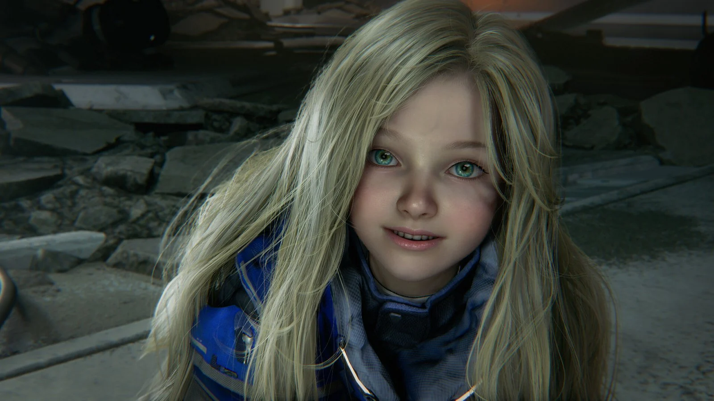
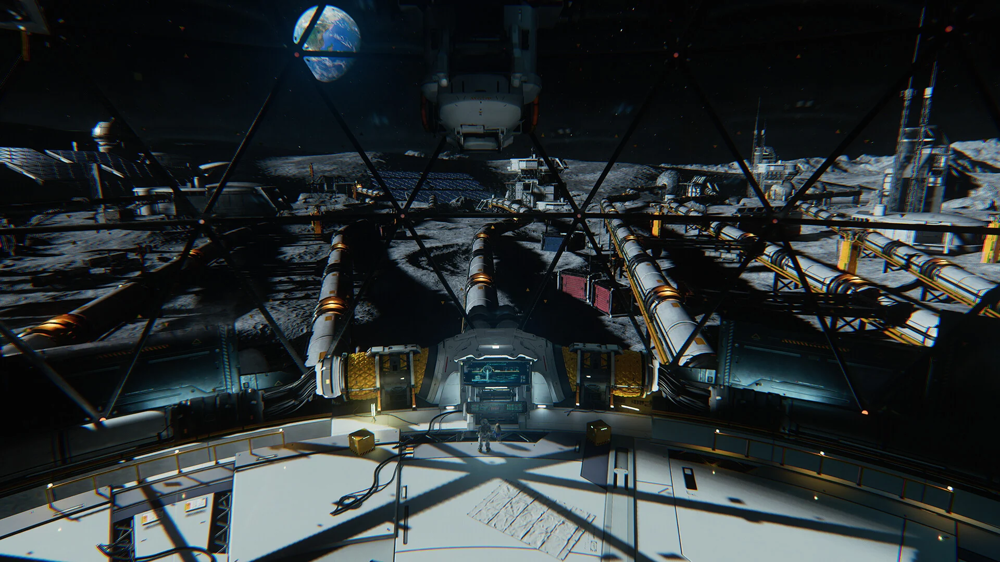
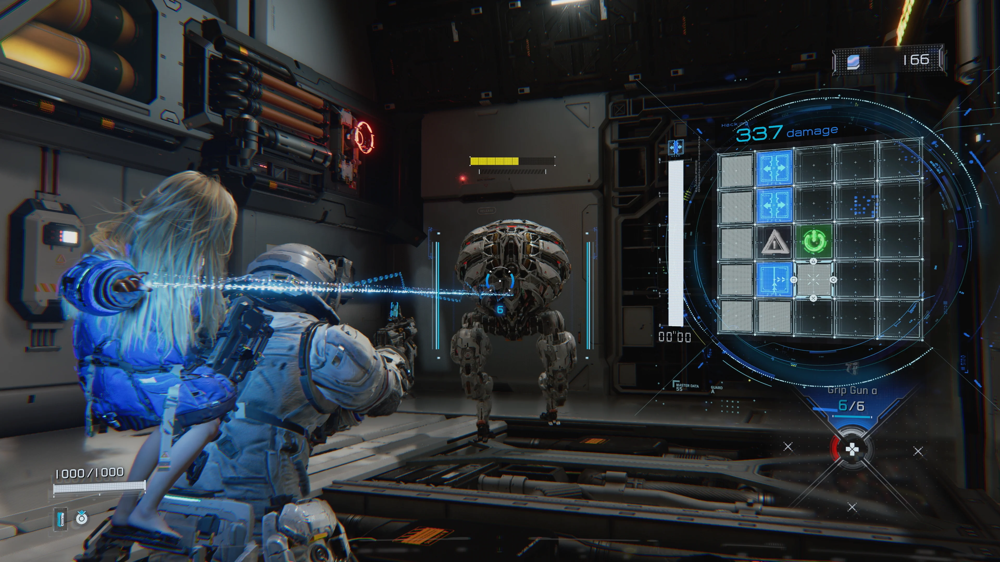

Si è fatto attendere, ma a sei anni dal suo primo annunncio è finalmente uscito. Pragmata è la nuova ip targata Capcom che vuole portare una boccata d'aria fresca ai Third-person shooters, mescolando sequenze di shooting con sequenze di puzzle solving nello stesso momento? Proprio così! Infatti i giocatori avranno metà schermo e controller impegnati a sparare ai nemici e l'altra metà a risolvere un puzzle per "hackerare" quest'ultimi. Detta così può intimorire, ma Capcom è riuscita a rendere il tutto intuitivo e non troppo difficile. La storia porterà a esplorare una base lunare umana dove l'AI ha ormai preso il sopravvento. I protagonisti sono due: Hugh, un membro della squadra inviata a investigare suddetta base, e Diana, un androide dall'aspetto di una bambina. La storia, per quanto interessante e con molti bei momenti, rimane comunque un aspetto secondario per Pragmata, dove il gameplay la fa da padrone.



